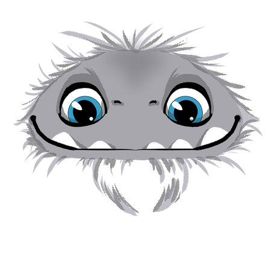
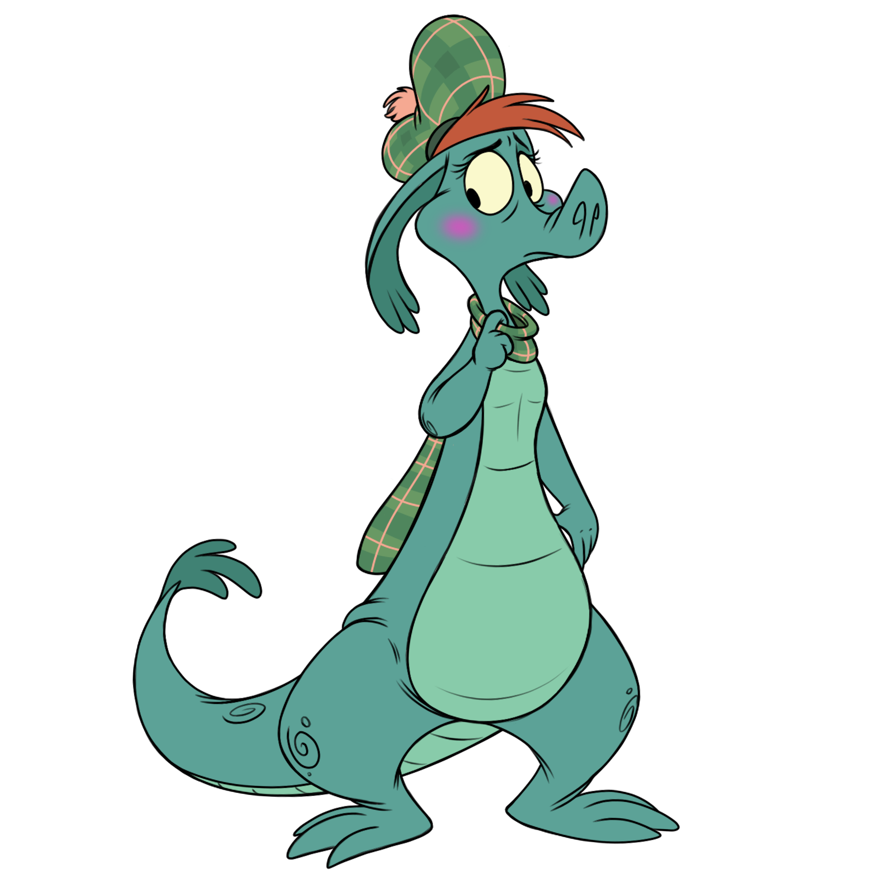
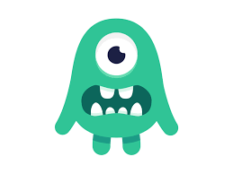
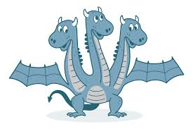
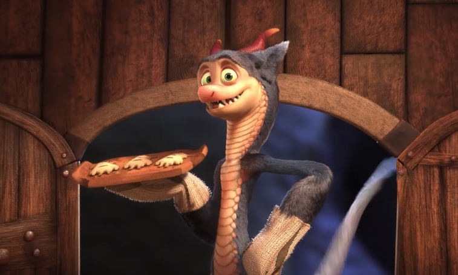

During the great quarantine of 2020, Mariel "Rawr" Hamson, came up with a unique idea that melded her love of cupcakes and monsters. She started baking for herself and her family and eventually moved on to taking online orders through Instagram and Facebook (all while properly socially distancing!).
As things took off, she expanded to multiple brick & mortar locations in the Portland area including:
Check out our map of locations to see which Little Monster is closest to you!
Sellwood
Lents
Alberta Arts District
St. Johns (Flagship store)
Each cupcake is lovingly made with a different monster peeking out from chocolate ganache frosting once you take a bite. Be on the lookout for the fan favorites:
The Yeti (/ˈjɛti/) or Abominable Snowman is a folkloric ape-like creature taller than an average human,that is said to inhabit the Himalayan mountains. The names Yeti and Meh-Teh are commonly used by the people indigenous to the region, and are part of their history and mythology.
In Scottish folklore, the Loch Ness Monster or Nessie (Scottish Gaelic: Uilebheist Loch Nis[4]) is said to be a creature that inhabits Loch Ness in the Scottish Highlands. It is often described as large in size with a long neck and one or more humps protruding from the water. Popular interest and belief in the creature have varied since it was brought to worldwide attention in 1933. Evidence of its existence is anecdotal, with a few disputed photographs and sonar readings.
For people with social anxiety, the disorder is seen as a horrifying, scary, terrible monster. The anxiety monster doesn't have long to live as you become aware, and put into place, the methods and strategies that will change your brain – your thoughts, your beliefs, and your feelings.
also called the Lernean Hydra, in Greek legend, the offspring of Typhon and Echidna (according to the early Greek poet Hesiod's Theogony), a gigantic water-snake-like monster with nine heads (the number varies), one of which was immortal.
In 1970s Los Angeles, the legendary ghost La Llorona is stalking the night -- and the children. Ignoring the eerie warning of a troubled mother, a social worker and her own kids are drawn into a frightening supernatural realm.
Grendel is a character in the Anglo-Saxon epic poem Beowulf (AD 700–1000). He is one of the poem's three antagonists (along with Grendel's mother and the dragon), all aligned in opposition against the protagonist Beowulf. Grendel is feared by all in Heorot but Beowulf.
"These cupcakes are TO DIE for!!"